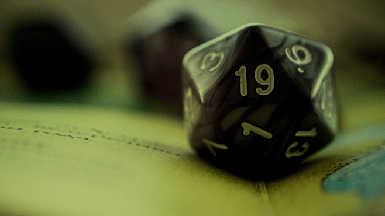

O que é RPG de mesa?
Role-playing-game mais conhecido como "RPG" é um jogo narrativo de interpretação, onde os jogadores interpretam as ações e escolhas de seu próprio personagem, em um mundo onde podem fazer o que bem quiserem. O jogo tende a ser mais colaborativo e social do que competitivo, já que na maioria das vezes os jogadores se unem e formam um grupo e embarcam em uma aventura. O gênero pode variar de acordo com o sistema usado, mas quando se fala em RPG a primeira coisa que vem na cabeça das pessoas é um mundo medieval com dragões, magias, espadas e quests, que é o caso do gênero de sistema mais famoso chamado "Dungeons & Dragons".

A origem
Em registros oficiais, o Role Playing Game ou RPG surgiu no ano de 1974, com o jogo já
mencionado "Dungeons & Dragons" criado por Gary Gygax,
que era um sistema muito mais simples do que é atualmente.
Inicialmente tinha-se muito preconceito com quem jogava, já que era algo totalmente novo
e muito nichado, porém, atualmente os RPGs de mesa voltaram com a popularidade dos RPGs
virtuais, tanto em forma de podcast, quanto em forma de videogames, que é o caso do
"Ordem Paranormal", um RPG mestrado pelo streamer "Cellbit" que alcançou mais de 100 mil
visualizações simultaneas em uma stream de seu RPG.
Jogadores
Ao contrário dos RPGs de jogos, no RPG de mesa, os jogadores que criam a história.
O mestre: O mestre é quem narra a história, cria os NPCs, cria os locais e faz os bosses. Basicamente
cria o universo que os jogadores jogam.
Jogadores: Os jogadores são as pessoas que jogam a história do mestre no universo do mestre
com seus próprios personagens. Eles são como os "protagonistas" da história.
Por onde começar?
Se você está iniciando agora no mundo dos RPGs de mesa, tanto como mestre ou como jogador,
você precisa de um conjunto de "dados " e criatividade.
Caso você não não queira fazer um sistema próprio, ou jogar um sistema complicado e em
inglês, recomendo o sistema "Order & Chaos", que é um sistema simples e totalmente português.
Como mestre você terá bem mais dificuldade como iniciante, então é recomendado jogar como
jogador primeiro, ou então usar um "sistema" mais fácil. Mas aqui vai uma dica, não use
as regras do sistema a risca, isso só vai tornar o jogo chato e maçante, dê uma quebrada
nas regras de vez em quando. Se seus jogadores estiverem com vergonha de se soltarem
e interpretarem o personagem, crie um NPC que fale com um sotaque diferente e seja bem
louco por exemplo, isso vai abrir uma porta pros seus jogadores interpretarem melhor.
Lembre de deixar o jogo mais divertido possível para seus jogadores.
Como jogador lembre de criar um personagem interessante, com uma "backstory" bem construída,
isso vai fazer seu personagem ser marcante, e quem sabe o mestre te dê uma recompensa pela
sua boa interpretação? Você também precisará de dados para fazer testes de perícia, como
por exemplo um teste de mira pra ver se você conseguiu acertar o alvo.